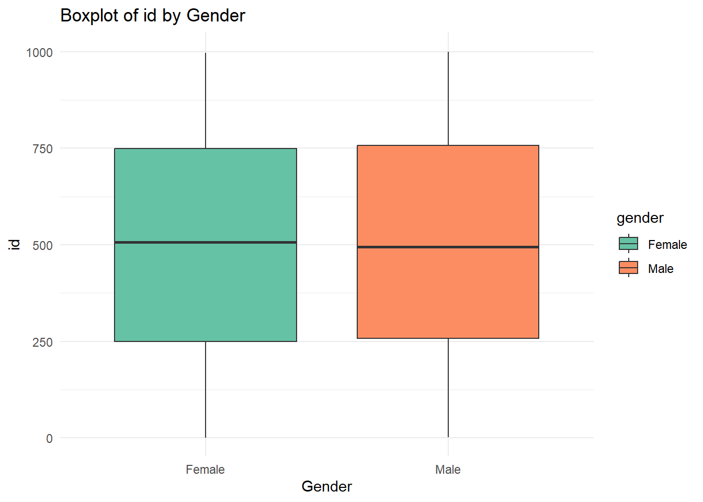
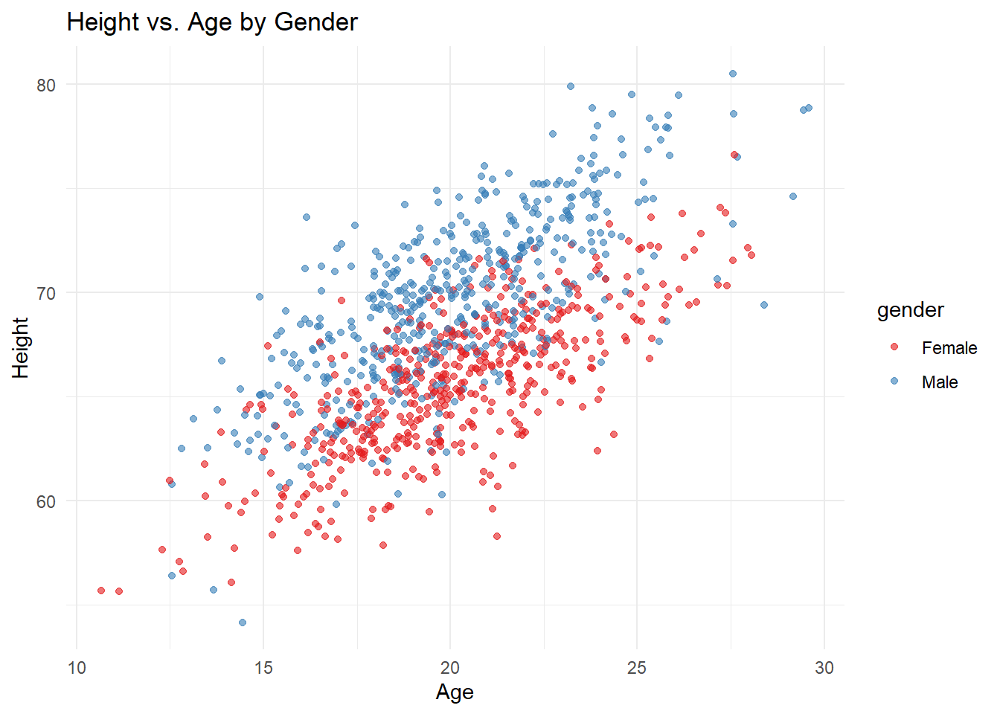
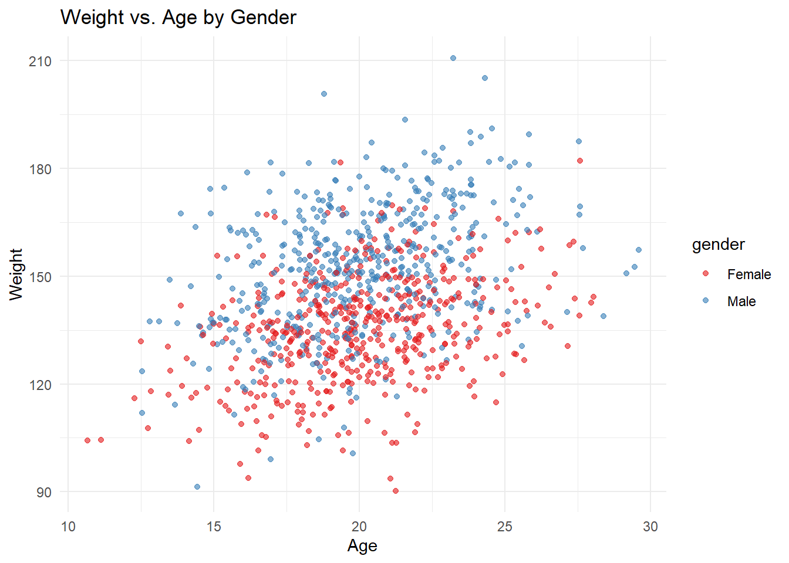
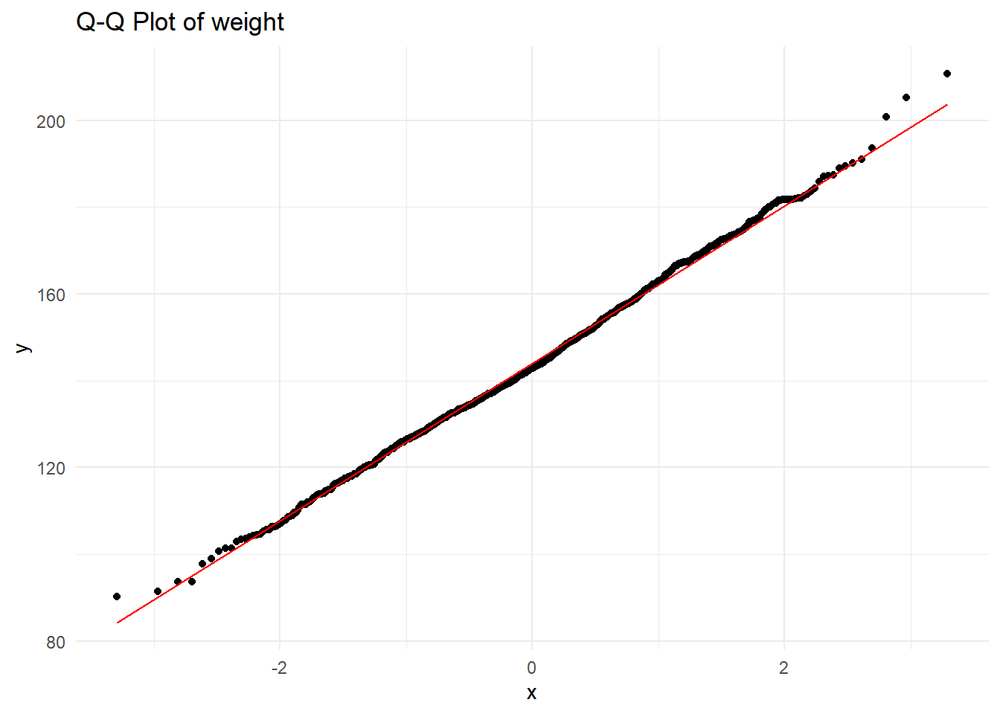
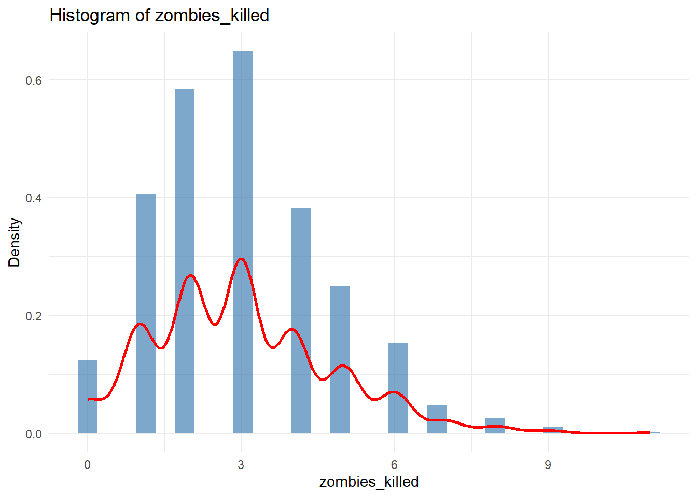
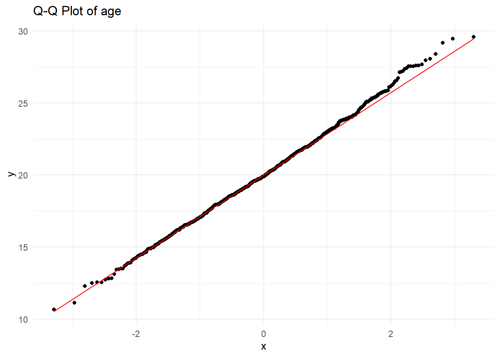
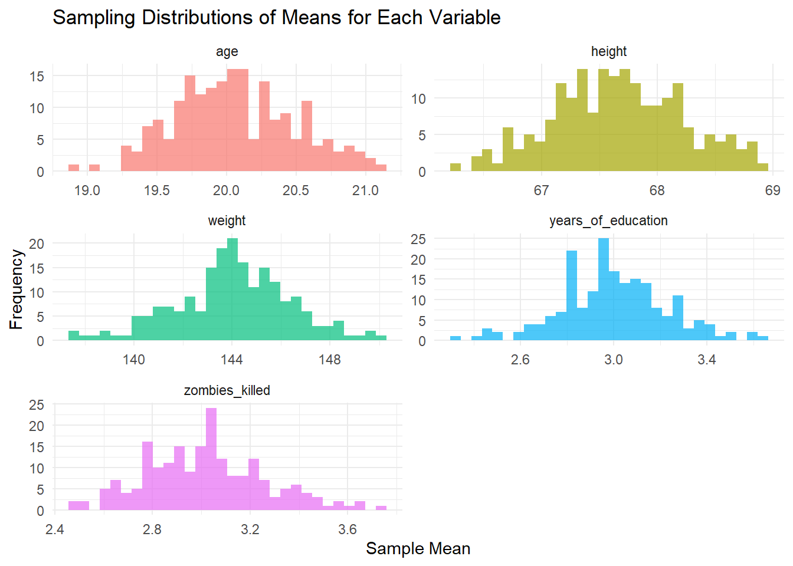

Rows: 1000 Columns: 10
── Column specification ────────────────────────────────────────────────────────
Delimiter: ","
chr (4): first_name, last_name, gender, major
dbl (6): id, height, weight, zombies_killed, years_of_education, age
ℹ Use `spec()` to retrieve the full column specification for this data.
ℹ Specify the column types or set `show_col_types = FALSE` to quiet this message.
# A tibble: 6 × 10
id first_name last_name gender height weight zombies_killed
<dbl> <chr> <chr> <chr> <dbl> <dbl> <dbl>
1 1 Sarah Little Female 62.9 132. 2
2 2 Mark Duncan Male 67.8 146. 5
3 3 Brandon Perez Male 72.1 153. 1
4 4 Roger Coleman Male 66.8 130. 5
5 5 Tammy Powell Female 64.7 132. 4
6 6 Anthony Green Male 71.2 153. 1
# ℹ 3 more variables: years_of_education <dbl>, major <chr>, age <dbl>
summary(z)
id first_name last_name gender
Min. : 1.0 Length:1000 Length:1000 Length:1000
1st Qu.: 250.8 Class :character Class :character Class :character
Median : 500.5 Mode :character Mode :character Mode :character
Mean : 500.5
3rd Qu.: 750.2
Max. :1000.0
height weight zombies_killed years_of_education
Min. :54.15 Min. : 90.29 Min. : 0.000 Min. :0.000
1st Qu.:64.68 1st Qu.:131.81 1st Qu.: 2.000 1st Qu.:2.000
Median :67.50 Median :142.89 Median : 3.000 Median :3.000
Mean :67.63 Mean :143.91 Mean : 2.992 Mean :2.996
3rd Qu.:70.38 3rd Qu.:156.28 3rd Qu.: 4.000 3rd Qu.:4.000
Max. :80.53 Max. :210.79 Max. :11.000 Max. :8.000
major age
Length:1000 Min. :10.66
Class :character 1st Qu.:18.07
Mode :character Median :19.90
Mean :20.05
3rd Qu.:21.94
Max. :29.59
numeric_cols <- z %>%select(where(is.numeric)) %>%colnames()for (var in numeric_cols) { p <-ggplot(z, aes(x = gender, y = .data[[var]], fill = gender)) +geom_boxplot() +labs(title =paste("Boxplot of", var, "by Gender"),x ="Gender",y = var) +theme_minimal() +scale_fill_brewer(palette ="Set2") print(p)}

Step 4
ggplot(z, aes(x = age, y = height, color = gender)) +geom_point(alpha =0.6) +labs(title ="Height vs. Age by Gender",x ="Age",y ="Height") +theme_minimal() +scale_color_brewer(palette ="Set1")

ggplot(z, aes(x = age, y = weight, color = gender)) +geom_point(alpha =0.6) +labs(title ="Weight vs. Age by Gender",x ="Age",y ="Weight") +theme_minimal() +scale_color_brewer(palette ="Set1")

*** Do these variables seem to be related? In what way?*** #There seems to be a positive correlation between height and age, as well as weight and age. As individuals grow older, they tend to become taller and heavier.
Step 5
numeric_cols <- z %>%select(where(is.numeric)) %>%select(-id) %>%colnames()for (var in numeric_cols) {# Histogram with Density Curve p1 <-ggplot(z, aes(x = .data[[var]])) +geom_histogram(aes(y = ..density..), bins =30, fill ="steelblue", alpha =0.7) +geom_density(color ="red", size =1) +# Overlay density curvelabs(title =paste("Histogram of", var),x = var,y ="Density") +theme_minimal()print(p1)# Q-Q Plot p2 <-ggplot(z, aes(sample = .data[[var]])) +stat_qq() +stat_qq_line(color ="red") +labs(title =paste("Q-Q Plot of", var)) +theme_minimal()print(p2)}
Warning: Using `size` aesthetic for lines was deprecated in ggplot2 3.4.0.
ℹ Please use `linewidth` instead.
Warning: The dot-dot notation (`..density..`) was deprecated in ggplot2 3.4.0.
ℹ Please use `after_stat(density)` instead.



*** Do these variables seem to be related? In what way?***
#zombies_killed and years of education do not have normal distributions.
Warning: There was 1 warning in `summarize()`.
ℹ In argument: `across(all_of(numeric_cols), mean, na.rm = TRUE)`.
Caused by warning:
! The `...` argument of `across()` is deprecated as of dplyr 1.1.0.
Supply arguments directly to `.fns` through an anonymous function instead.
# Previously
across(a:b, mean, na.rm = TRUE)
# Now
across(a:b, \(x) mean(x, na.rm = TRUE))
What are the means and standard deviations of the sampling distribution for each variable? How do the standard deviations of the sampling distribution for each variable compare to the standard errors estimated from your first sample of size 50?
#Based on the data comparison, small differences appeared. However, the SD values are close to the SE values, indicating that SE is a good estimate of the variability in sample means.
Step 8
sampling_distribution_long <- sampling_distribution %>%pivot_longer(cols =everything(), names_to ="Variable", values_to ="Sample_Mean")ggplot(sampling_distribution_long, aes(x = Sample_Mean, fill = Variable)) +geom_histogram(bins =30, alpha =0.7, position ="identity") +facet_wrap(~ Variable, scales ="free", ncol =2) +labs(title ="Sampling Distributions of Means for Each Variable",x ="Sample Mean",y ="Frequency") +theme_minimal() +theme(legend.position ="none")

What do they look like? Are they normally distributed? What about for those variables that you concluded were not originally drawn from a normal distribution?
#The distributions for Height, Weight, and Age showed a normal distribution. Zombies Killed and Years of Education show slight skewness but still approximate normality due to the Central Limit Theorem (CLT). According to the CLT, if a variable is normally distributed in the population, its sample mean distribution will also be normal. If the sample size is large enough, its sample mean distribition tends to become normal. The originally skewed variables, Zombies Killed and Years of Education, now show a more normal shape compared to their original distribution.
How does this compare to the CIs generated in Step 9?
CIs from Step 9 and Step 10 are similar, indicating consistency in estimating population means. However, Step 9 CIs are slightly wider, particularly for weight, zombies killed, and age. This suggests that using multiple independent samples captures more variability than bootstrapping from a single sample. Overall, both methods provide plausible estimates, with Step 9 likely being more representative of the true population.